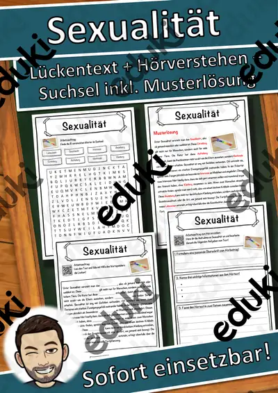
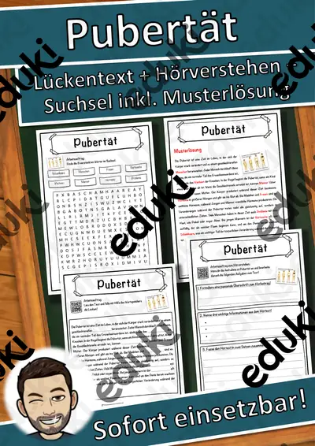
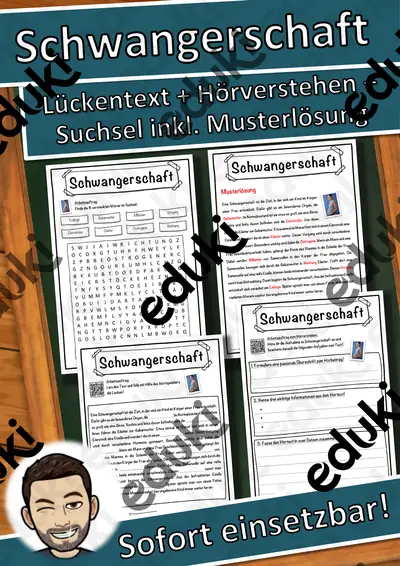
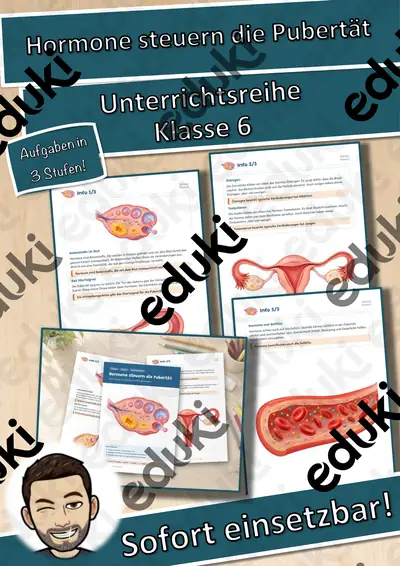

Pubertät, Sexualität und Aufklärung: Arbeitsblätter für Klasse 5–9 (Biologie)
Pubertät und Sexualaufklärung werden in der Biologie ab Klasse 5 behandelt, behutsam und im Rahmen der Elterninformation. Es geht um Veränderungen, Fortpflanzung und Verantwortung.
Typische Bausteine der Einheit sind Körperveränderungen, Hormone und Menstruation; darauf aufbauend kommen Fortpflanzung, Schwangerschaft und Verhütung zur Sprache.
In den Lehrplänen der Länder ist das Thema im Fach Biologie verankert, meist in der Sekundarstufe I (Klasse 5–9). Die Jugendlichen kennen Veränderungen der Pubertät und gehen respektvoll miteinander um.
Für den Einstieg in Pubertät, Sexualität und Aufklärung bieten sich Aufgaben zu Körperveränderungen an, zum Üben solche zu Hormone und Menstruation, zur Wiederholung vor einer Lernkontrolle ein Blick auf Verhütung. Die Lösungen liegen bei, sodass im Unterricht niemand nachschlagen muss. Die Lückentexte mit Hörverstehen verbinden Lesen, Hören und Schreiben.
Zum Thema finden Sie 9 Materialien, unter anderem Hormone steuern die Pubertät, Sexualität Lückentext mit Wortspeicher und Pubertät Lückentext mit Wortspeicher, verteilt auf 8 Lückentexte mit Hörverstehen in Klasse 5–7. Eine anonyme Fragebox erlaubt Fragen, die sich keiner laut zu stellen traut.
Das gehört zum Thema
Passende Arbeitsblätter und Materialpakete

Sexualität Lückentext mit Wortspeicher Hörverstehen und Suchsel

Pubertät Lückentext mit Wortspeicher Hörverstehen und Suchsel

Schwangerschaft Lückentext mit Wortspeicher Hörverstehen und Suchsel

Verhütung Lückentext mit Wortspeicher Hörverstehen und Suchsel

Homosexualität Lückentext mit Wortspeicher Hörverstehen und Suchsel

Geschlechtsorgane Lückentext mit Wortspeicher Hörverstehen und Suchsel

Fortpflanzung Lückentext mit Wortspeicher Hörverstehen und Suchsel

Menstruation Lückentext mit Wortspeicher Hörverstehen und Suchsel

Hormone steuern die Pubertät – Unterrichtsreihe (Klasse 6)
Häufige Fragen
Für welche Klassenstufe passen die Arbeitsblätter zu Pubertät, Sexualität und Aufklärung?
Die 9 Materialien zu diesem Thema sind für Klasse 5–7 ausgelegt, die meisten davon für Klasse 6. Einzelne Titel lassen sich mit Anpassung auch eine Stufe darunter oder darüber einsetzen.
Welche Inhalte decken die Materialien zu Pubertät, Sexualität und Aufklärung ab?
Behandelt werden unter anderem Körperveränderungen, Hormone, Menstruation und Fortpflanzung. Welche Aspekte in Ihrer Klasse Vorrang haben, richtet sich nach dem Lehrplan Ihres Bundeslandes.
Wie setze ich Pubertät, Sexualität und Aufklärung im Unterricht ein?
Beginnen Sie mit einem Einstieg zu Körperveränderungen und ergänzen Sie nach Bedarf. Eine anonyme Fragebox erlaubt Fragen, die sich keiner laut zu stellen traut.
Mehr Material nach Fach und Klasse
- Alle Materialien Biologie
- Arbeitsblätter Biologie Klasse 5
- Arbeitsblätter Biologie Klasse 6
- Arbeitsblätter Biologie Klasse 7
- Arbeitsblätter Biologie Klasse 8
- Arbeitsblätter Biologie Klasse 9
- Unterrichtsmaterial Klasse 5
- Unterrichtsmaterial Klasse 6
- Unterrichtsmaterial Klasse 7
- Unterrichtsmaterial Klasse 8
- Unterrichtsmaterial Klasse 9
Verwandte Lehrplanthemen
- Atmung, Verdauung und Organe (Biologie, Klasse 5–9)
- Fische und Meerestiere (Biologie, Klasse 4–8)
- Fotosynthese (Biologie, Klasse 5–9)
- Herz und Blutkreislauf (Biologie, Klasse 5–9)
- Ökosysteme und Nahrungsnetze (Biologie, Klasse 5–9)